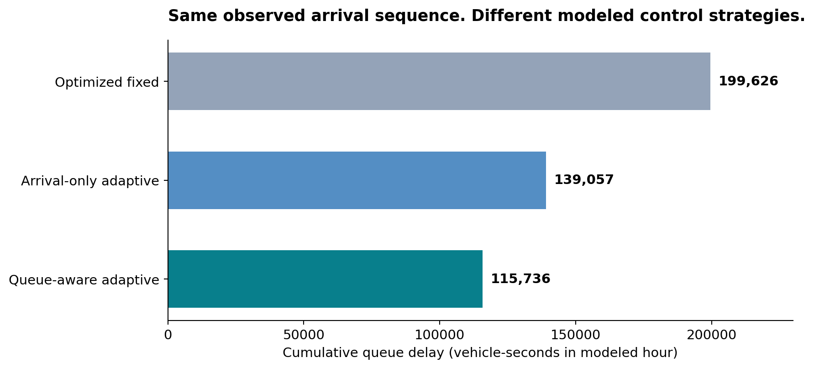
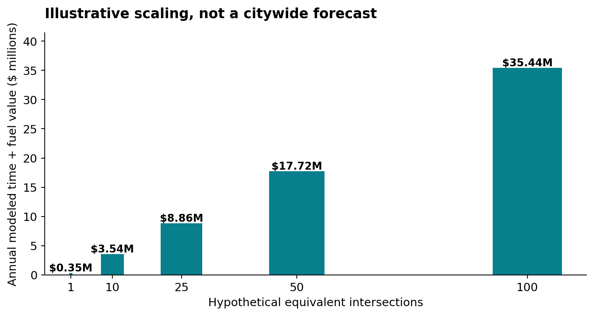
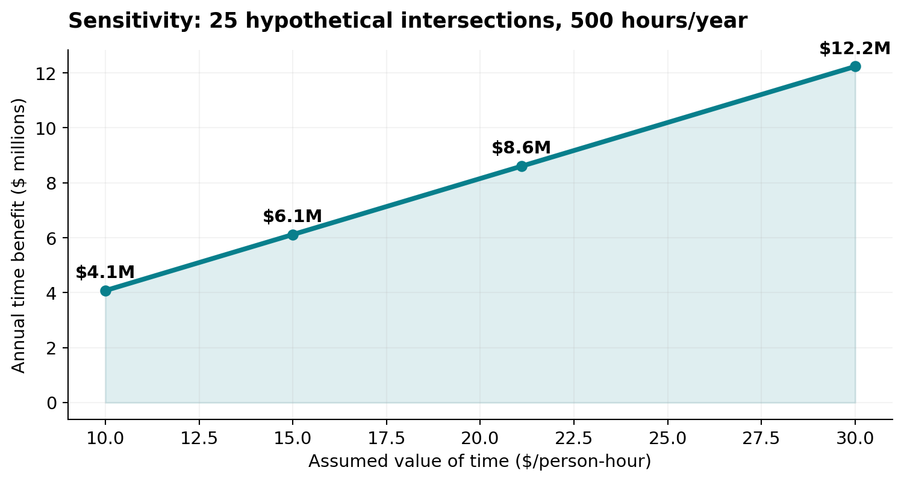
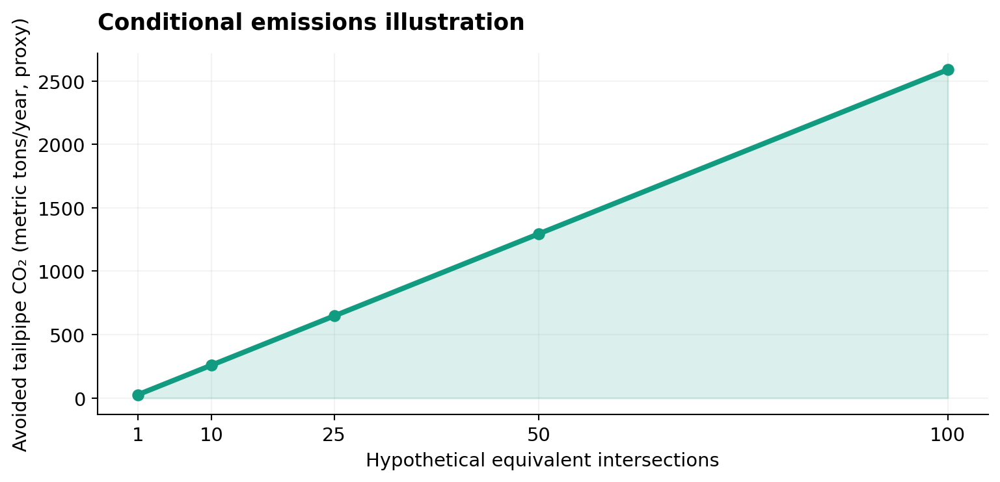

Better information changes the outcome.
The baseline is not an intentionally poor 50/50 plan. It is a demand-optimized fixed split. The queue-aware algorithm still reduced cumulative modeled delay by 42.02% compared with that fixed comparator, and by 16.77% compared with arrival-only adaptive timing.

Why queue awareness matters
Both adaptive models use recent arrivals. The queue-aware controller also accounts for existing queues and discharge conditions, so it can respond to a backlog that arrivals alone cannot reveal.
What could time lost at a red light be worth?
Applying illustrative economic assumptions to the model's 23.3 saved vehicle-hours yields approximately $709 per comparable peak hour in combined traveler time value and estimated fuel cost. This is a scenario, not measured financial savings or a municipal budget benefit.

Modeled annual traveler-time value plus fuel proxy assuming 25 matching intersections, 500 comparable peak hours each. Neither the number of matching sites nor the repeated hourly savings have been validated.
The point is to show why the economics could matter at network scale, and why real-world validation is necessary.
Change the assumptions yourself
Fixed illustrative assumptions: 0.25 gallons per avoided idle-hour, $3.50/gallon, 8.887 kg CO₂/gallon. All values are adjustable scenarios except the field-informed simulated delay difference.
Don't trust a single headline number.

Sensitivity of the modeled time value to the hourly value placed on travel time.

Conditional CO₂ proxy derived from avoided idling assumptions, not directly measured emissions.
Read the methodology. Check the limitations.
Includes the Evanston observations, mathematical derivations, fixed and adaptive control comparisons, nine hypothetical road-geometry scenarios, and the additional economic sensitivity appendix.
Sources for economic assumptions: US DOT 2025 Benefit-Cost Analysis Guidance ($21.10/person-hour, 2023 USD); US EPA greenhouse gas equivalencies (8.887 kg CO₂/gallon). Occupancy, fuel use, fuel price, and scale are assumptions. This is independent student research, not a City of Evanston pilot.